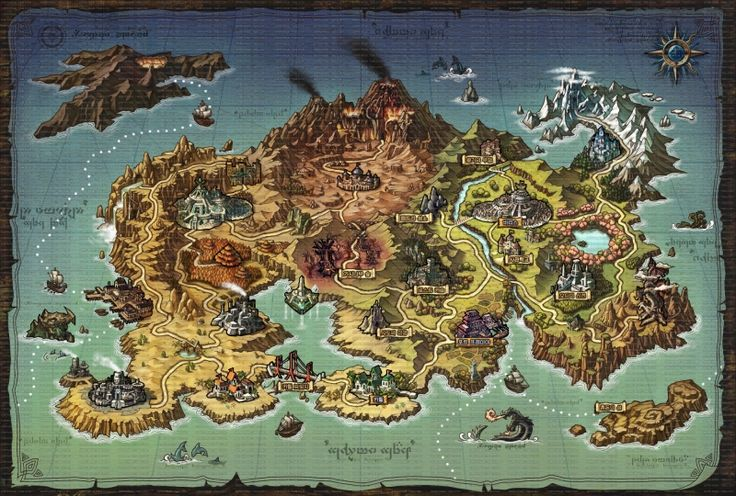
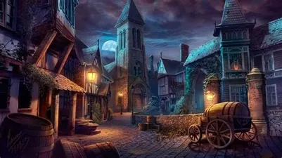

mechanics
everything about Ark of time
- their will be several magics to pick from when you start off like flame, telekeneis, poison, etc.
- i have talked about weapons before so im going to talk about armor.
the armor is sorta like the weapons one thing i did not mention is that you can not weild or wear any item
that is more than 3 levels higher than you are.
- there will be many maps and updates but the main maps include alantion village and lanteis city.
i will add more in future updates.

- alantion village is going to be under water in case you did not guess.
Lanteis is going to be a magic city were you will start at when you first start.
